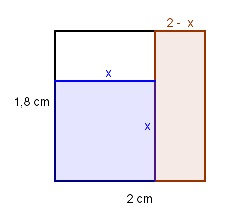

Aufgabe 100
Die Fläche des blauen Quadrates ist gleich der
Fläche des roten Rechtecks. Wie groß ist eine
Quadratseite?
 Die Quadratseite sei x
Die eine Rechteckseite ist 1,8
Die andere 2 - x
Die Quadratseite sei x
Die eine Rechteckseite ist 1,8
Die andere 2 - x

Rechteckfläche (2 - x) * 1,8 Quadratfläche x2 (2 - x) * 1,8 = x2 3,6 - 1,8x = x2 |+1,8x 3,6 = x2 + 1,8x |-3,6 x2 + 1,8x - 3,6 = 0 p, q - Formel p = 1,8 ; q = -3,6 x1,2 = x1,2 = -0,9 ± x1,2 = -0,9 ± x1,2 = -0,9 ± 2,1 x1 = -0,9 + 2,1 = 1,2 cm Die Lösung ist plausibel, sie muss größer als 0 (keine negative Länge) und kleiner als 1,8 cm sein (sonst entstehen keine 3 Flächen). x2 = -0,9 - 2 = -3 keine Lösung, es gibt keine negative Länge